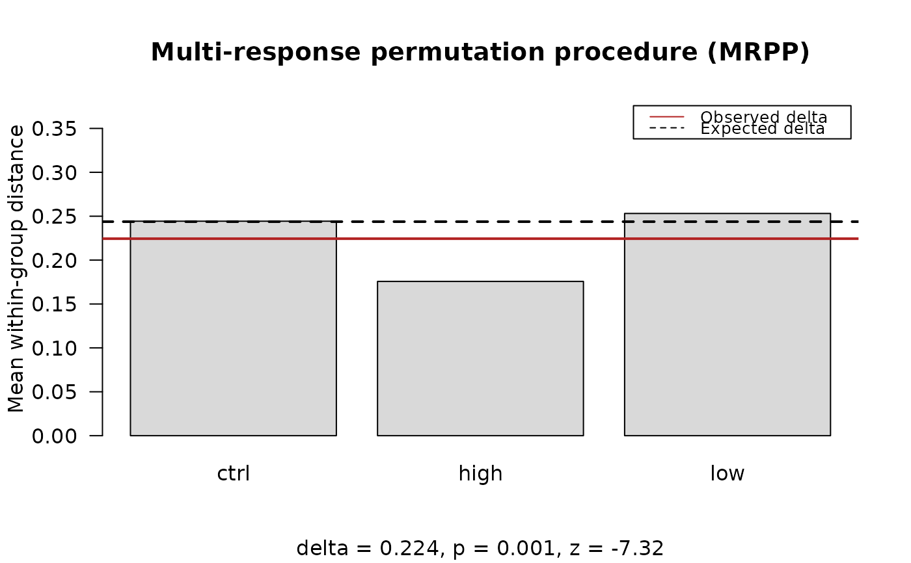
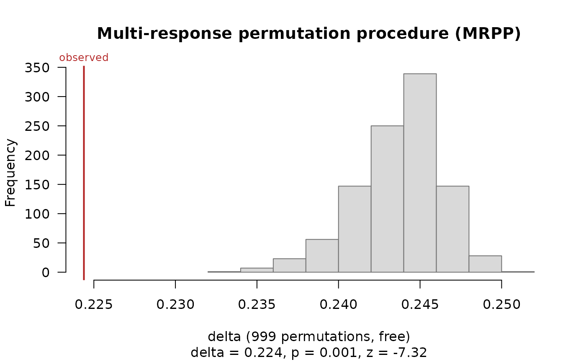

Tests whether samples are more similar to the other samples in their group
than to samples in other groups. Gives the same statistics as
vegan::mrpp(): the observed and expected weighted mean within-group
distance (\(\delta\)), the chance-corrected within-group agreement
\(A\), the mean distance within each group, and a permutation p-value.
Also gives the standardized effect size \(z\) that
summary(vegan::permustats()) reports. Computes them in parallel C,
straight from the distances.
Usage
mrpp(
dm,
groups,
data = NULL,
weights = "n",
pairwise = FALSE,
p_adjust = "holm",
permutations = 999L,
strata = NULL,
seed = 0L,
cpus = n_cpus()
)Arguments
- dm
A
distobject, such as frombeta_div()orbray(), or a symmetric numeric matrix of distances. Must not containNAs or negative values.- groups
Each sample's group: a vector or factor with one value per sample, matched to the samples in
dmby name when both are named, else in the same order asdm. Or, whendatais given, the name of one of its columns (or a vector with one value per row ofdata). Values are treated as categories, even if they are numbers.- data
Optional sample metadata: a data frame with one row per sample, holding
groups(andstrata) as columns. Rows are matched to the samples indmby row name, and rows for other samples are ignored; without row names, they must be in the same order asdm. Default:NULL.- weights
How to weight each group's mean within-group distance in \(\delta\), by its number of samples \(n\):
'n': \(n\), as recommended by Mielke & Berry (2001). The default, andvegan::mrpp()'sweight.type = 1.'n-1': \(n - 1\).weight.type = 2.'n(n-1)': \(n(n - 1)\), the number of pairs of samples, so that \(\delta\) is the mean of all within-group distances.weight.type = 3.
1,2, or3are also accepted, as invegan::mrpp().- pairwise
Also test each pair of groups: run the same test on just the two groups' samples, for every pair, and adjust the pairs' p-values for multiple testing with
p_adjust. See Pairwise comparisons. Default:FALSE.- p_adjust
With
pairwise = TRUE, how to adjust the pairs' p-values for multiple testing: one ofstats::p.adjust.methods('holm','hochberg','hommel','bonferroni','BH','BY','fdr', or'none'), matched asstats::p.adjust()matches them. Giving it withoutpairwise = TRUEis an error. Default:'holm'.- permutations
The number of permutations. Default:
999. Alternatively, a matrix with one permutation of1:nper row, as frompermute::shuffleSet(), to use instead of random ones.- strata
Permute samples only within these groups (blocks), for designs such as repeated measures. With
data, the name of one of its columns, or a vector with one value per row ofdata. Withoutdata, a vector with one value per sample, matched to the samples by name when it has names, otherwise in the same order. Default:NULL(free permutation).- seed
An integer seed for the random permutations. The same seed gives the same p-values. Default:
0- cpus
How many parallel processing threads should be used. The default,
n_cpus(), will use all logical CPU cores.
Value
A list of class c("ecodive_mrpp", "ecodive_test"), which prints
as a summary. as.data.frame() gives its first four fields as one row,
with the same columns as ecodive's other permutation tests. Its fields:
statistic: The observed \(\delta\), nameddelta: the weighted mean of the groups' mean within-group distances.p_value: The permutation p-value: the proportion of permutations, counting the observed one, with a \(\delta\) as small as or smaller than the observed one.z: The standardized effect size,(delta - mean(delta_perm)) / sd(delta_perm). Negative when samples are closer within groups than expected by chance.n_perm: The number of permutations.expected_delta: The expected \(\delta\) under the null hypothesis: the mean of all the distances.A: Chance-corrected within-group agreement,1 - delta / expected_delta.class_delta: Each group's mean within-group distance (NAfor a group of one sample).class_n: Each group's number of samples.weights: Theweightsused.pairwise: Withpairwise = TRUE, a data frame with one row per pair of groups, named like"a-b", and columnsdelta,A,z,n(the pair's samples),n_perm,p_value, andp_adjusted. See Pairwise comparisons. OtherwiseNULL.p_adjust: Withpairwise = TRUE, thep_adjustmethod used. OtherwiseNULL.permutation: How samples were permuted:'free','within strata', or'supplied matrix'.
Attribute delta_perm holds the \(\delta\) of each permutation, as
vegan::mrpp()'s boot.deltas.
Details
Method
MRPP (Mielke et al. 1976; Mielke & Berry 2001) asks whether samples in the
same group are closer to each other than samples drawn at random. With
\(\bar{d}_g\) the mean distance between the \(n_g (n_g - 1) / 2\)
pairs of samples in group \(g\), the test statistic is their weighted
mean
$$\delta = \sum_g C_g \bar{d}_g, \quad C_g = w_g / \sum_h w_h$$
with weights \(w_g\) from weights. Groups of one sample have no pairs,
so they are left out, as in vegan::mrpp(). The expected value of
\(\delta\) over all permutations of the samples is the mean of all the
distances, and the chance-corrected within-group agreement is
\(A = 1 - \delta / E(\delta)\) (McCune & Grace 2002): 1 when samples are
identical within groups, 0 when groups are no more alike than chance, and
negative when they are less alike.
For each permutation, the group labels are shuffled among the samples and
\(\delta\) is recomputed. The p-value is
\((1 + \#\{\delta_{perm} \le \delta\}) / (1 + permutations)\). As in
vegan::mrpp(), permuted values within sqrt(.Machine$double.eps) of the
observed one count as ties. The standardized effect size \(z\) compares
the observed \(\delta\) with the permuted ones, using their mean and
(sample) standard deviation, as summary(vegan::permustats()) does. It is
NA with fewer than two permutations, or when every permutation gives the
same \(\delta\).
Speed and memory
With \(S_g\) the sum of the distances within group \(g\),
\(\delta = \sum_g c_g S_g\) for constants \(c_g\). So each
permutation costs one comparison per pair of samples, read straight from
dm, with no \(n \times n\) matrix. Many permutations share each pass
over the distances, and permutations run in parallel.
Reproducibility
The permutations come from seed, not from R's random number generator,
so set.seed() has no effect, and each permutation has a random number
stream of its own. Results are identical from run to run and for any
number of cpus. The random permutations differ from vegan::mrpp()'s,
so p-values and \(z\) agree with it only up to sampling error, unless
the same permutations matrix is given to both.
Differences from vegan::mrpp()
mrpp()takes distances, not a community table: compute them first withbeta_div()or a metric function such asbray().Ais reported even withpermutations = 0;vegan::mrpp()givesNAthen.A group of one sample has a
class_deltaofNA, wherevegan::mrpp()hasNaN.mrpp()does not compute the classification strength (CS), whichvegan::mrpp()also leavesNA.stratapermutes freely within strata. For other restricted designs, pass apermutationsmatrix frompermute::shuffleSet().
Pairwise comparisons
With pairwise = TRUE, each pair of groups is also tested on its own,
as q2-diversity's beta_group_significance(pairwise=True) does: the
distances are cut down to the two groups' samples, and the same test is
run on them, with the same number of permutations, the same strata
(cut down too), and the test's other arguments. The overall test is
unchanged.
Permutations: Each pair has random permutations of its own, drawn from
seedand the pair's position in the table, never from the number ofcpus. So a pair's p-value is reproducible, but differs (by sampling error) from that of the same test run by hand on the pair's samples with the sameseed. A suppliedpermutationsmatrix is cut down to each pair's samples by following each permutation's cycles: each of the pair's samples goes to the next of the pair's samples on its cycle. That gives a permutation of the pair's samples, uniformly distributed when the full one is, which keeps any restriction the matrix has, such as permuting only within strata.Multiple testing: The pairs' permutation p-values are adjusted together with
stats::p.adjust(method = p_adjust). The default, Holm's method, controls the family-wise error rate whatever the dependence between the pairs' tests.'BH'controls the false discovery rate instead, as q2-diversity's q-values do. The raw p-values are kept as well.Pairs that can't be tested: A pair the test can't be run on, such as two groups of one sample each, gets
NAs, with a warning, rather than an error. A test's other warnings for a pair, such as all of its distances being 0, are passed on, naming the pair.
The pairwise field of the result is a data frame with one row per pair
of groups, named like "a-b", in the order of the groups' factor levels
(sorted values, for other vectors). Its columns are the test's
statistics for the pair, z, n (the pair's number of samples),
n_perm, p_value (unadjusted) and p_adjusted. The p_adjust field
names the method, and print() shows both.
References
McCune, B., & Grace, J. B. (2002). Analysis of Ecological Communities. MjM Software Design, Gleneden Beach, Oregon. Chapter 24.
Mielke, P. W., Berry, K. J., & Johnson, E. S. (1976). Multi-response permutation procedures for a priori classifications. Communications in Statistics - Theory and Methods, 5(14), 1409-1424. doi:10.1080/03610927608827451
Mielke, P. W., & Berry, K. J. (2001). Permutation Methods: A Distance Function Approach. Springer, New York. doi:10.1007/978-1-4757-3449-2
Examples
# 30 samples in three treatment groups. The 'high' group has more
# of the first five genera.
set.seed(1)
counts <- matrix(rpois(30 * 20, 5), 30, 20)
rownames(counts) <- paste0('S', 1:30)
meta <- data.frame(
row.names = rownames(counts),
treatment = rep(c('ctrl', 'low', 'high'), each = 10),
site = rep(c('A', 'B'), 15) )
high <- meta$treatment == 'high'
counts[high, 1:5] <- counts[high, 1:5] + 5
dm <- bray(counts)
# Are samples more alike within treatment groups?
res <- mrpp(dm, 'treatment', meta)
res
#> Multi-response permutation procedure (MRPP) of Bray-Curtis Dissimilarity
#>
#> delta = 0.2244, p = 0.001, z = -7.322
#> Permutations: 999 (free)
#>
#> Mean within-group distances (weights: n):
#> ctrl high low
#> delta 0.2443 0.1757 0.2531
#> n 10 10 10
#>
#> Expected delta: 0.2438
#> Chance-corrected within-group agreement A: 0.07954
# Each group's mean within-group distance, and the permutations.
plot(res)

plot(res, type = 'null')

# The same, with the groups as a vector.
res <- mrpp(dm, meta$treatment)
as.data.frame(res)
#> test stat_name statistic p_value z n_perm
#> 1 mrpp delta 0.2243903 0.001 -7.321666 999
# Permuting only within sites.
mrpp(dm, 'treatment', meta, strata = 'site')
#> Multi-response permutation procedure (MRPP) of Bray-Curtis Dissimilarity
#>
#> delta = 0.2244, p = 0.001, z = -7.342
#> Permutations: 999 (within strata)
#>
#> Mean within-group distances (weights: n):
#> ctrl high low
#> delta 0.2443 0.1757 0.2531
#> n 10 10 10
#>
#> Expected delta: 0.2438
#> Chance-corrected within-group agreement A: 0.07954
# Each pair of treatments, with Holm-adjusted p-values.
mrpp(dm, 'treatment', meta, pairwise = TRUE)$pairwise
#> delta A z n n_perm p_value p_adjusted
#> ctrl-high 0.2100255 0.11073465 -9.180235 20 999 0.001 0.003
#> ctrl-low 0.2487199 -0.01162824 1.182126 20 999 0.892 0.892
#> high-low 0.2144254 0.08957766 -7.820948 20 999 0.001 0.003